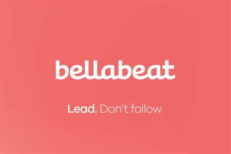

This project focuses on Power Query for data preparation and transformation, DAX for data modeling and calculations, and the creation of interactive reports and dashboards using Power BI's visualisation tools.


Data exploration in SQL.
We took a closer look at the Covid stats in Africa, through this visualusation. Tableau was used for the dashboard creation.

A capstone project for the Google Data Analytics Professional Certificate. Bigquery was used to clean and sort the data, then visuals were done in Excel (as well as Tableau).

A capstone project for the Google Data Analytics Professional Certificate. The whole project was conducted in R.

An exploration of Movie data, trying to find factors that contributes to the success of a movie. The data was loaded into Python, cleaned and correlation tests done. Plots for correlation visualisation of the two factors found to have the highest Correlation.
**

Data exploration in SQL.